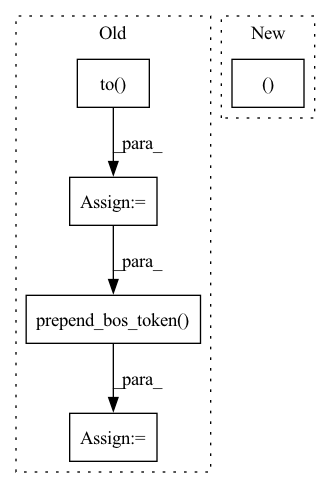

Pattern ID :23679
Before Change
target_tokens, _ = self.hparams.tokenizer(
target_words, target_word_lens, self.hparams.ind2lab, task="encode"
)
target_tokens = target_tokens.to( self.device)
y_in = sb.data_io.data_io.prepend_bos_token(
target_tokens, self.hparams.blank_index
)
// Forward pass
feats = self.hparams.compute_features(wavs)
feats = self.modules.normalize(feats, wav_lens)After Change
token_with_bos_lens = torch.cat(
[token_with_bos_lens, token_with_bos_lens]
)
batch.tokens_bos = tokens_with_bos, token_with_bos_lens
if hasattr(self.modules, "augmentation"):
wavs = self.modules.augmentation(wavs, wav_lens)
// Forward passIn pattern: SUPERPATTERN
Frequency: 3
Non-data size: 5
Instances Fragment ID: 73902322
Project Name: speechbrain/speechbrain
Commit Name: a92d8380111f42ca20b12ad63cca9a0eb4c681d3
Time: 2021-01-12
Author: aheba@linagora.com
File Name: recipes/LibriSpeech/ASR/transducer/experiment.py
M Class Name: ASR
N Class Name: ASR
M Method Name: compute_forward(3)
N Method Name: compute_forward(4)
M Parent Class: sb.Brain
N Parent Class: sb.Brain
M File Name: recipes/LibriSpeech/ASR/transducer/experiment.py
N File Name: recipes/LibriSpeech/ASR/transducer/experiment.py
M Start Line: 44
M End Line: 119
N Start Line: 47
N End Line: 116
Before Change
TN_output = self.modules.enc(feats)
TN_output = self.modules.enc_lin(TN_output)
_, targets, _ = y
targets = targets.to( self.device)
// Prediction network: output-output dependency
decoder_input = sb.data_io.data_io.prepend_bos_token(
targets, bos_index=self.hparams.blank_id
)
PN_output = self.modules.emb(decoder_input)
PN_output, _ = self.modules.dec(PN_output)
PN_output = self.modules.dec_lin(PN_output)
// Joint the networksAfter Change
TN_output = self.modules.enc_lin(TN_output)
// Prediction network: output-output dependency
targets, target_lens = batch.phn_encoded_bos
PN_output = self.modules.emb(targets)
PN_output, _ = self.modules.dec(PN_output)
PN_output = self.modules.dec_lin(PN_output) Fragment ID: 73902321
Project Name: speechbrain/speechbrain
Commit Name: 7a9d2677c4ca24e5002c44571273f35430640d9a
Time: 2020-12-18
Author: plantinga.peter@protonmail.com
File Name: recipes/minimal_examples/neural_networks/ASR_Transducer/example_asr_transducer_experiment.py
M Class Name: TransducerBrain
N Class Name: TransducerBrain
M Method Name: compute_forward(3)
N Method Name: compute_forward(4)
M Parent Class: sb.Brain
N Parent Class: sb.Brain
M File Name: recipes/minimal_examples/neural_networks/ASR_Transducer/example_asr_transducer_experiment.py
N File Name: recipes/minimal_examples/neural_networks/ASR_Transducer/example_asr_transducer_experiment.py
M Start Line: 8
M End Line: 21
N Start Line: 9
N End Line: 18
Before Change
self.hparams.ind2lab,
task="encode",
)
target_tokens = target_tokens.to( self.device)
y_in = sb.data_io.data_io.prepend_bos_token(
target_tokens, self.hparams.bos_index
)
// ASR encoder forward pass
with torch.no_grad():
ASR_encoder_out = self.modules.asr_model.encode(After Change
Forward computations from the waveform batches to the output probabilities.
batch = batch.to(self.device)
wavs, wav_lens = batch.sig
tokens_bos, tokens_bos_lens = batch.tokens_bos
// Add augmentation if specified
if stage == sb.Stage.TRAIN: Fragment ID: 73902320
Project Name: speechbrain/speechbrain
Commit Name: ee71b8424ecddf9a73e3107efc22c00df7e29338
Time: 2021-01-16
Author: mirco.ravanelli@gmail.com
File Name: recipes/timers-and-such/direct/train.py
M Class Name: SLU
N Class Name: SLU
M Method Name: compute_forward(3)
N Method Name: compute_forward(4)
M Parent Class: sb.Brain
N Parent Class: sb.Brain
M File Name: recipes/timers-and-such/direct/train.py
N File Name: recipes/timers-and-such/direct/train.py
M Start Line: 29
M End Line: 60
N Start Line: 31
N End Line: 33